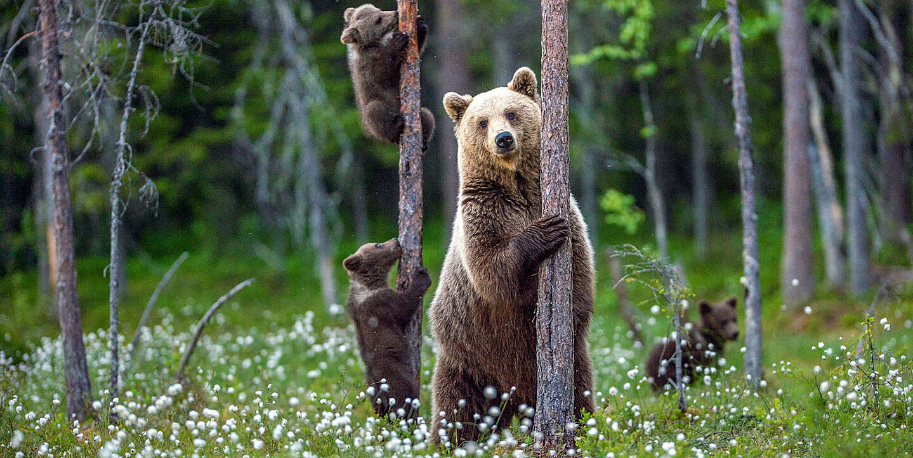
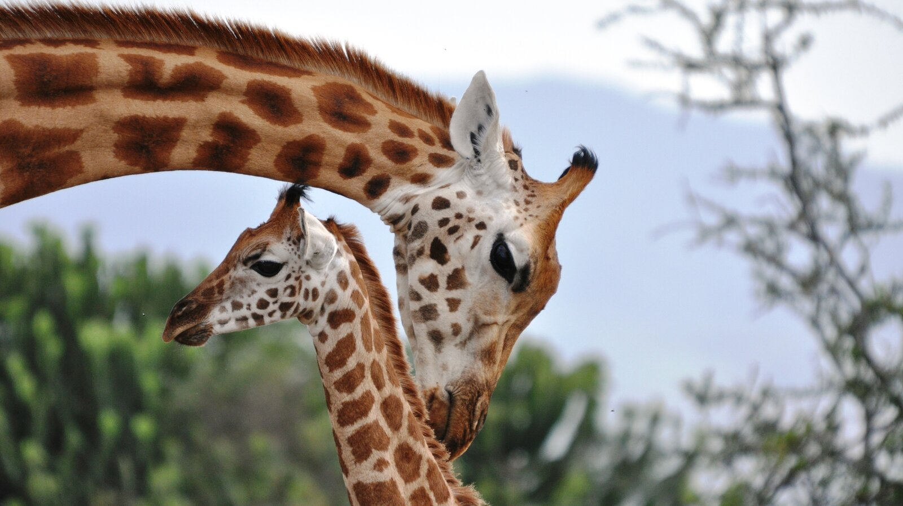
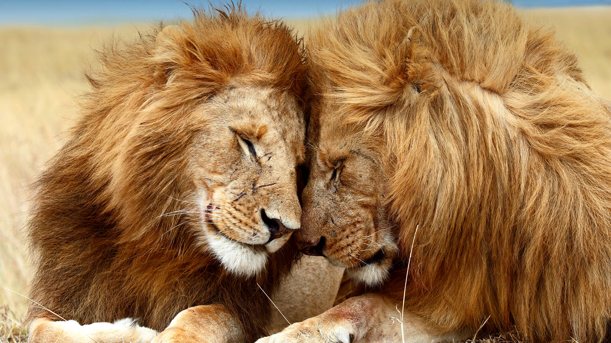
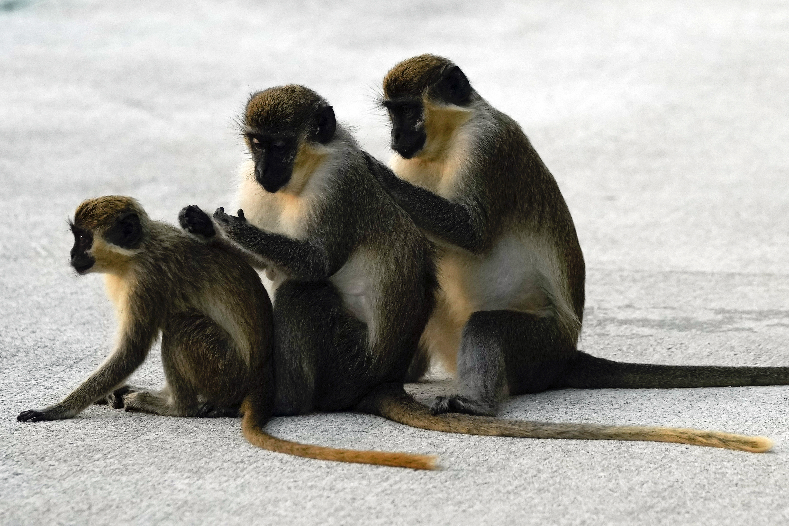
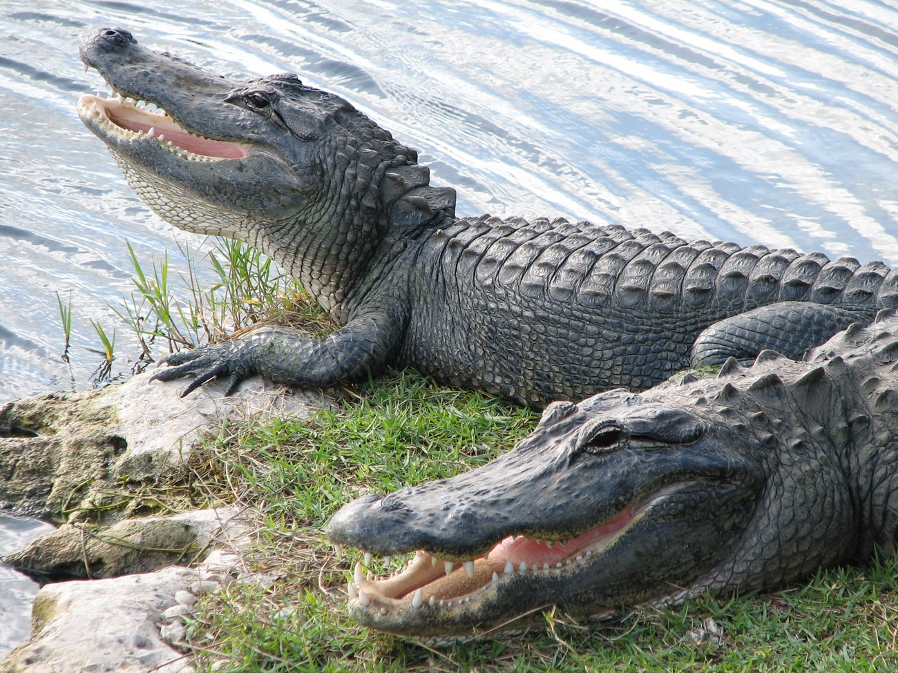

Zoo Animals
This Website will guide you on what type of animals with have here at Wild Animal Mini-Zoo. Before you endovour in your journey as zookeeper please use the link and images to identify each animal and understand their needs and behaviors. At the bottom of each image you have the names of each of our little friends.

- Ollie
- Mona

- Frankie
- Coconut

- Mella
- Karl

- Cookie
- Earl
- Banan Pudding

- Wren
- Aspen
- Mika